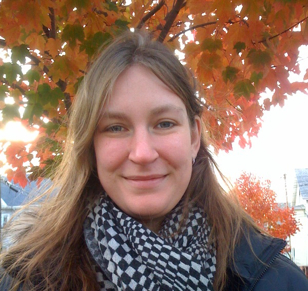

About
Val Morash is a postdoctoral research fellow, transitioning to a sponsored PI, at the Smith-Kettlewell Eye Research Institute in San Francisco. She has undergraduate degrees in Electrical Engineering and Brain and Cognitive Sciences from MIT, a Master's in Electrical Engineering from MIT, a Master's in Statistics from the University of California, Berkeley, and a PhD in Psychology from the University of California, Berkeley.
Val is a recipient of the Pathway to Independence Award (NIH K99/R00 Grant). Her graduate work was supported by the National Defense Science and Engineering Graduate (NDSEG) Fellowship, National Science Foundation (NSF) Graduate Research Fellowship, and Institute of Education Sciences (IES, administered through UC Berkeley) Research in Cognition and Mathematical Education Graduate Fellowship. She has also been awarded the 2014 Elizabeth Scott Memorial Award for outstanding Master's research (UC Berkeley Statistics), the 2008 Chorafas Foundation Scholarship for outstanding Master's research (MIT Electrical Engineering), and the 2006 Society of Women Engineers (SWE) Guidant Foundation Scholarship, among others.
Val's research is split 50/50 on haptic perception and on issues related to visual impairment (e.g., education and accessibility). Her underlying interest is in how human cognition and knowledge is shaped by the senses.
Val grew up in Michigan, near Michigan State University, where both of her parents are professors, Dr. Merry Morash (Criminology) and emeritus Dr. Edward Morash (Business). She enjoys playing the violin and gardening. She has a large collection of hand and power tools, as well as a laser cutter and two 3D printers. Val is most passionate about traveling, and recent trips include Tanzania (2013), Vietnam (2014), Sweden/Denmark (2015), Lisbon/Prague (2015), and Croatia (2016).
Download Val's CV